Sistem Tempahan Bilik FKTEN
Tempah bilik guna sama dan makmal fakulti secara dalam talian: semak kekosongan masa nyata, PIC meluluskan, makluman emel automatik dan acara terus ke Google Calendar anda.
Apa yang ada dalam manual ini
Semua staf boleh mula dengan Bahagian 1 dan 2. PIC bilik dan makmal: lihat juga Bahagian 3.
1 · Pengenalan
Kenapa sistem ini, aliran proses, peranan, bilik dan makmal yang diliputi.
2 · Membuat tempahan
Pilih masa, isi borang, tunggu kelulusan, Tempahan Saya dan pembatalan.
3 · PIC bilik & makmal
Lulus / tolak, Tempahan Khas, tempah bagi pihak, tetapan bilik dan gambar.
4 · Pentadbir
Cuti & penutupan, pengguna & peranan, tetapan sistem dan log emel.
Kenapa sistem tempahan baharu?
Sebelum ini tempahan dibuat dengan menjemput akaun tempahan ke acara Google Calendar dan PIC menerima jemputan tersebut. Kaedah itu mudah, tetapi sukar dipantau.
✕ Kaedah lama (jemputan Calendar)
- Tiada paparan kekosongan semua bilik dalam satu skrin
- Tempahan bertindih boleh berlaku
- Status kelulusan tidak jelas kepada pemohon
- Tiada rekod, sejarah atau laporan penggunaan
- Makmal tidak termasuk
✓ Sistem Tempahan Bilik FKTEN
- Jadual masa nyata semua bilik guna sama dan makmal
- Tiada pertindihan: slot terus dikunci sebaik ditempah
- PIC lulus / tolak dalam sistem, emel automatik kepada pemohon
- Acara diluluskan terus masuk Google Calendar pemohon
- Sejarah, laporan penggunaan, tempahan khas untuk jadual kelas
Aliran tempahan dalam 4 langkah
Klik setiap langkah untuk penerangan.
Pilih ruang & masa
Klik slot kosong pada jadual.
Hantar tempahan
Status: Menunggu Kelulusan.
PIC meluluskan
Lulus atau tolak dengan sebab.
Masuk Google Calendar
Emel + acara kalendar.
Siapa menggunakan sistem ini
Log masuk dengan akaun Google UniMAP (@unimap.edu.my). Peranan ditentukan secara automatik; akaun pelajar tidak dibenarkan.
Staf FKTEN
Tempah semua bilik guna sama dan makmal. Maklumat dibaca daripada Senarai Induk Staf FKTEN.
Staf FKC
Fakulti Komputeraan Cerdas: boleh menempah makmal sahaja. Isi profil sekali (seperti UniSIS).
Staf fakulti lain
Boleh melihat jadual sahaja. Untuk tempahan, hubungi PIC (PIC boleh tempah bagi pihak).
PIC bilik / makmal
Lulus / tolak tempahan bilik jagaan, tempahan khas, tetapan bilik dan gambar. Makmal: Penolong Jurutera.
Pentadbir
Pantau dan bertindak ke atas semua bilik, urus cuti, peranan, tetapan dan log emel.
Ruang yang boleh ditempah
Bilik Guna Sama · staf FKTEN
Dewan Serbaguna, Bilik Mesyuarat Dekan, Bilik Mesyuarat Utama, Bilik Diskusi, Bilik Tutorial, Bilik Viva-Voce, Bilik Vibe 1 dan Bilik Vibe 2.
Makmal · staf FKTEN & FKC
Optoelektronik, Fotonik, Komputer, IC Termaju, Elektronik Asas, Mikro Pemprosesan, Simulasi Komputer A/B, IC A/B, Bilik Bersih, Analisa Kegagalan, Pengkomputeran Bioperubatan, Bioinstrumentasi, Biobahan, Peranti Perubatan, Biomekanik.
Log masuk & laman utama
- Buka pautan sistem dan log masuk dengan akaun Google UniMAP anda.
- Laman utama memaparkan ucapan, ringkasan tempahan anda dan bilangan ruang yang kosong sekarang.
- Bahagian Tempah Ruang Sekarang: pilih Bilik Guna Sama atau Makmal.
- Menu kiri: Tempah Bilik (dua halaman), Tempahan Saya dan menu PIC / Pentadbir mengikut peranan.
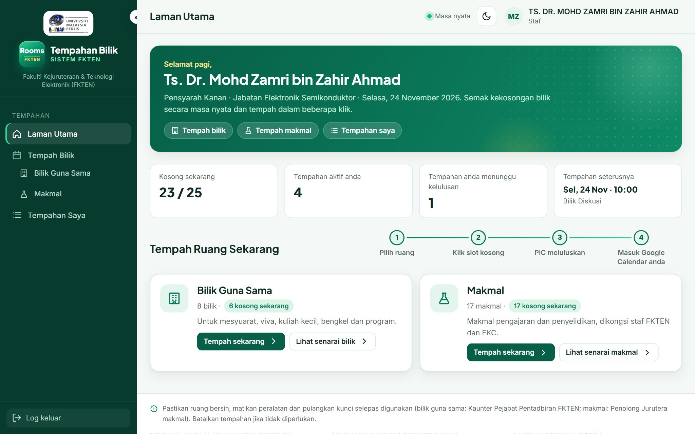
Klik untuk besarkanProfil (staf FKC & staf baharu)
- Staf FKTEN dalam Senarai Induk: tiada apa perlu diisi.
- Staf lain (FKC, staf FKTEN baharu, fakulti lain) mengisi profil sekali sebelum tempahan pertama.
- Isi sama seperti dalam UniSIS: gelaran, nama penuh, fakulti, jabatan, jawatan dan no. telefon.
- Boleh dikemas kini kemudian melalui Profil Saya.
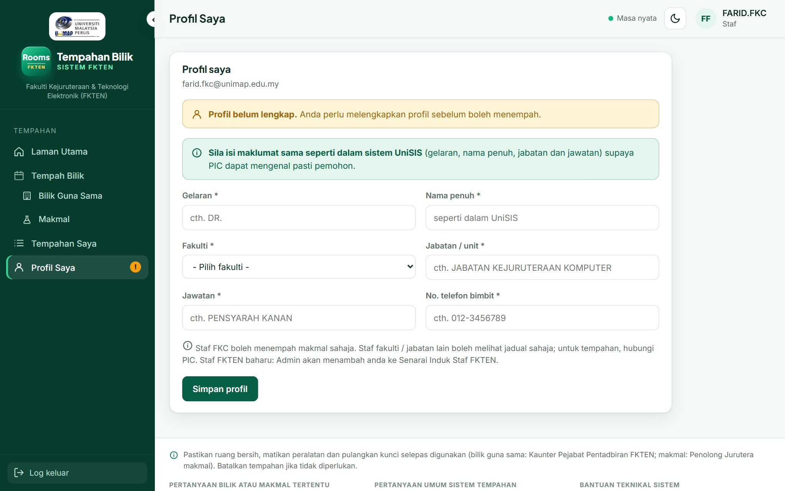
Klik untuk besarkanMembuat tempahan
Untuk semua staf: pilih ruang dan masa, hantar tempahan, pantau status dan batalkan jika tidak diperlukan.
Tempah Ruang Sekarang
- Dua kategori: Bilik Guna Sama dan Makmal, masing-masing dengan bilangan yang kosong sekarang.
- Tempah sekarang terus ke jadual tempahan.
- Lihat senarai membuka kad setiap bilik; klik kad untuk halaman bilik (gambar, kemudahan, waktu operasi, PIC).
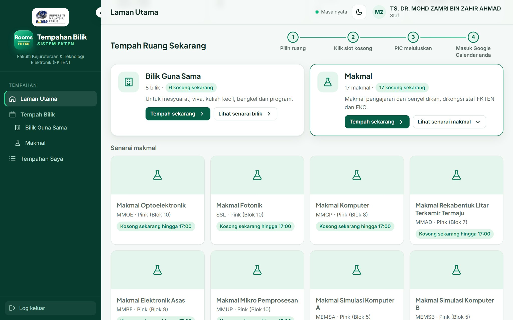
Klik untuk besarkanJadual tempahan
- Setiap baris = satu bilik; setiap petak = 30 minit. Garis merah = masa sekarang.
- Warna: putih kosong · hijau tempahan anda · jingga menunggu · kelabu ditempah · biru gelap tempahan khas / kelas · berjalur tutup.
- Tukar tarikh dengan ← → atau Kosong seterusnya. Tapis ikut kapasiti atau kemudahan.
- Butang bulat ◀ ▶ di tengah skrin untuk menatal ke kiri / kanan (klik atau tekan lama).
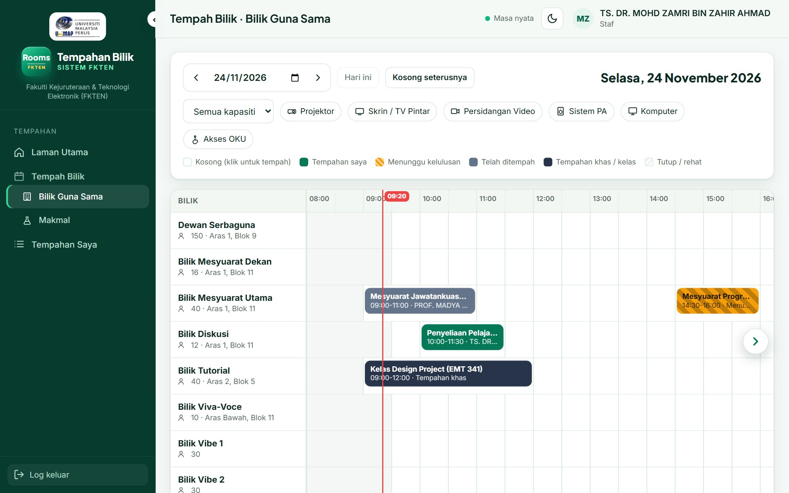
Klik untuk besarkanMakmal: cari & tapis
- Halaman Tempah Bilik › Makmal menyenaraikan 17 makmal dengan kod dan bangunan.
- Carian: taip nama atau kod, cth. IC, MMCP.
- Tapis ikut bangunan: Pink atau Biru.
- Kelas mengikut jadual akademik dipaparkan sebagai tempahan khas.
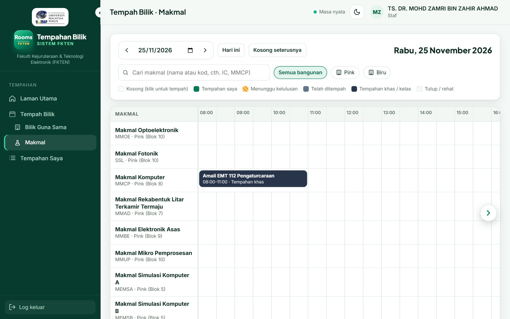
Klik untuk besarkanSiapa yang menempah?
- Letak tetikus pada blok tempahan: kad kecil menunjukkan tajuk, masa, bilik, pemohon dan status.
- Di telefon: ketik sekali untuk kad, ketik lagi (atau Lihat butiran) untuk butiran penuh.
- Klik blok untuk butiran penuh dan sejarah tindakan.
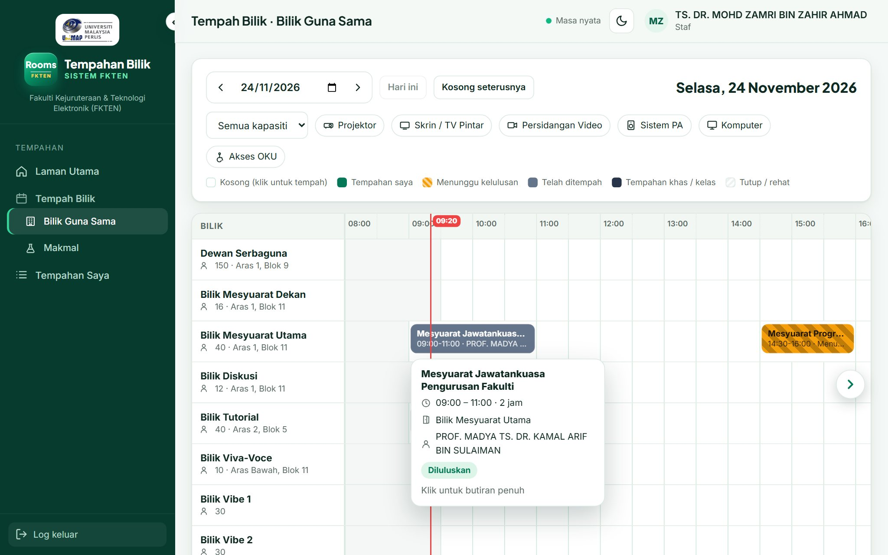
Klik untuk besarkanPilih masa
- Klik slot kosong (atau seret merentasi beberapa slot).
- Kad Pilih masa tempahan muncul di tengah skrin.
- Pilih Tamat: senarai hanya menunjukkan masa yang masih kosong secara berturutan, jadi tidak akan bertindih.
- Teruskan ke borang, atau Batal pilihan untuk memilih masa / bilik lain.
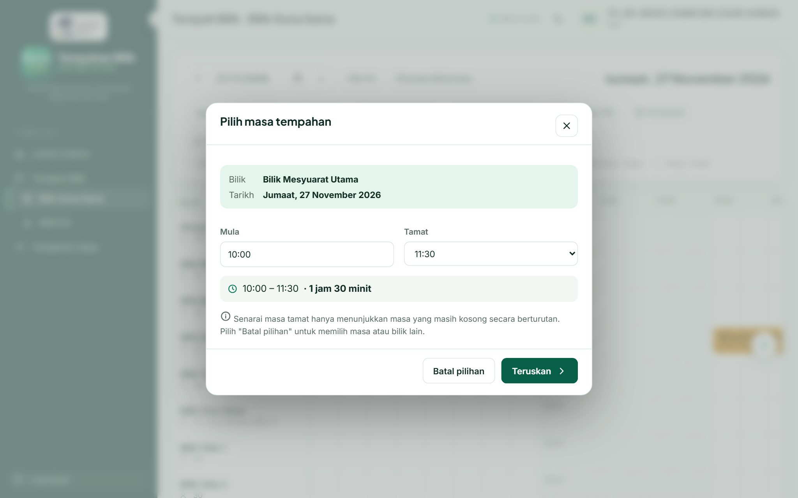
Klik untuk besarkanIsi borang tempahan
- Bilik, tarikh dan masa diisi automatik daripada langkah 1.
- Isi tajuk, tujuan, bilangan peserta dan keperluan tambahan.
- No. telefon wajib: PIC akan menghubungi nombor ini jika perlu penjelasan.
- Tandakan akuan penggunaan dan klik Hantar tempahan.
- ← Tukar masa kembali ke langkah 1 tanpa kehilangan maklumat yang telah ditaip.
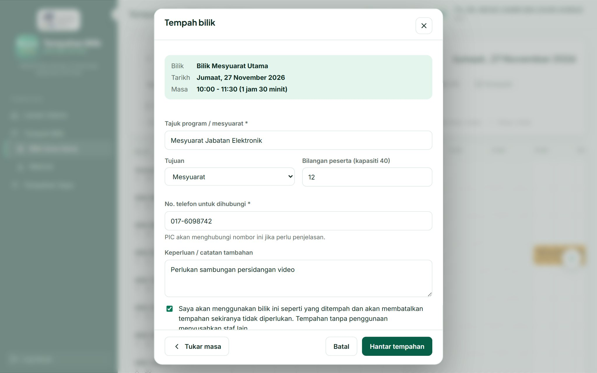
Klik untuk besarkanHantar & tunggu kelulusan
Semasa sistem menyimpan, skrin dikaburkan dengan mesej "Sila tunggu. Jangan tutup atau muat semula halaman ini." Selepas berjaya, nombor rujukan dipaparkan dan emel pengesahan dihantar kepada anda dan PIC (contoh emel di slaid seterusnya).
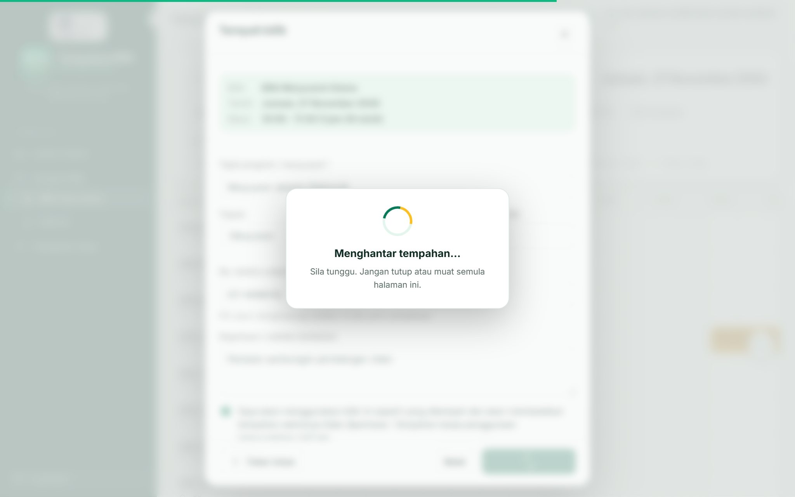
Klik untuk besarkan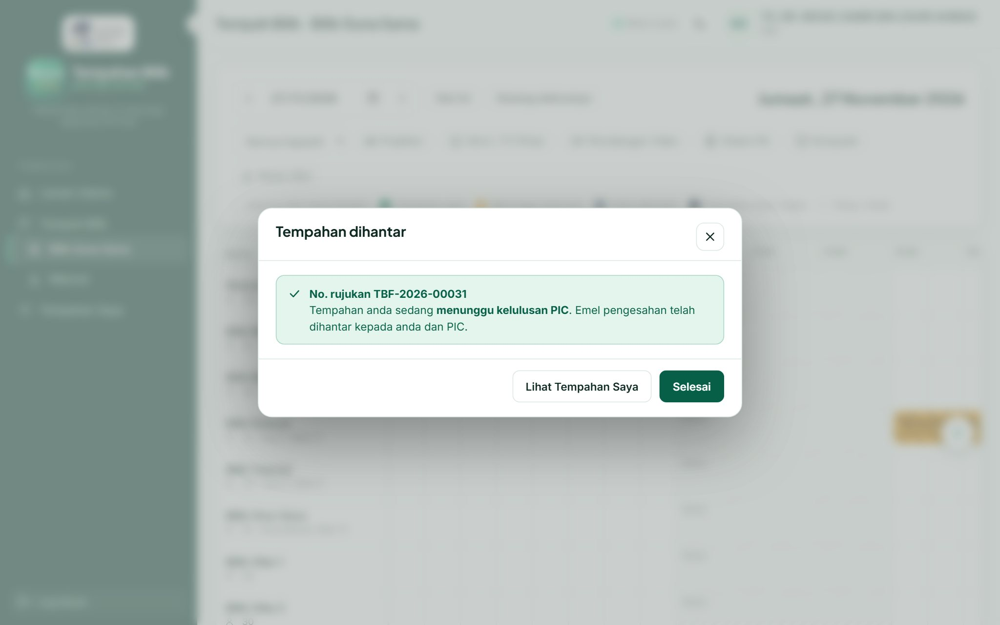
Klik untuk besarkanEmel yang anda terima
- Diterima: sejurus selepas Hantar, bersama nombor rujukan (cth. TBF-2026-00031).
- Diluluskan: lokasi, tempat ambil kunci, nama & telefon PIC; acara masuk ke Google Calendar anda.
- Ditolak atau dibatalkan oleh PIC: bersama sebab.
- Peringatan sehari sebelum tempahan.
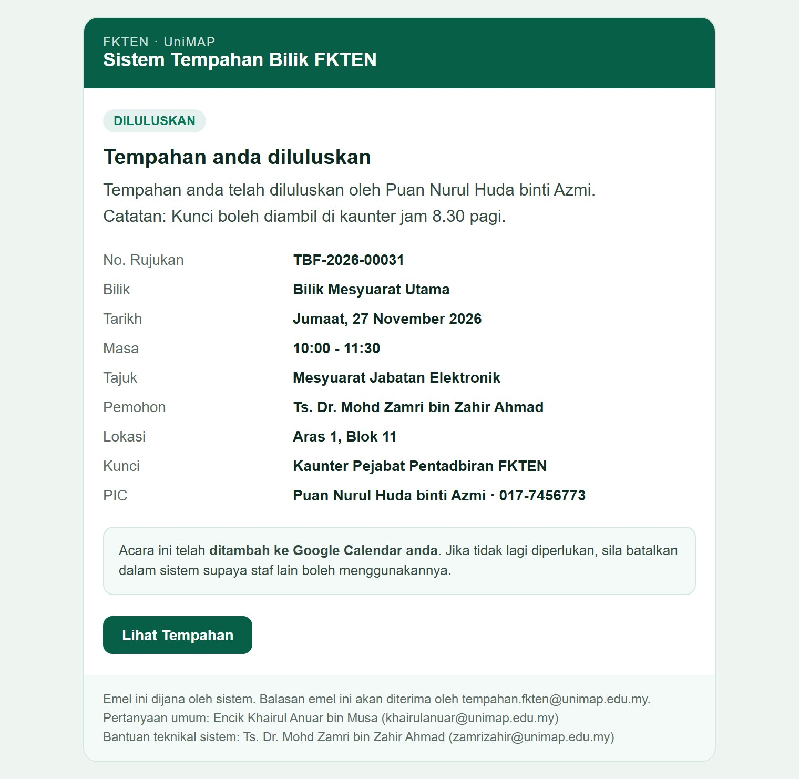
Klik untuk besarkan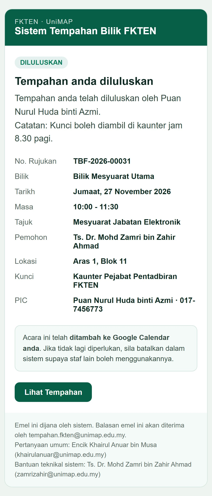
Tempahan Saya
- Senarai Akan datang dan Lepas & lain-lain, boleh ditapis ikut Bilik Guna Sama / Makmal.
- Status berwarna; tempahan diluluskan ditanda Dalam Google Calendar.
- Buka di Calendar, Batal dan Butiran.
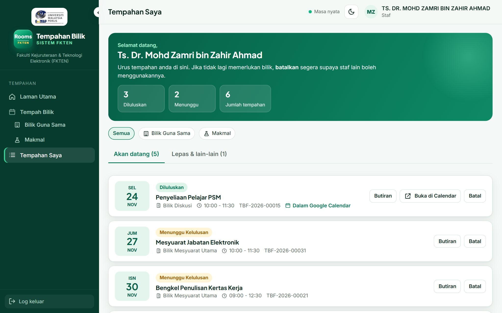
Klik untuk besarkanBatalkan jika tidak diperlukan
- Klik Batal pada tempahan (sebelum masa mula).
- Panel pengesahan muncul: isi sebab (pilihan).
- Klik Sahkan batal, atau Kembali jika tersilap.
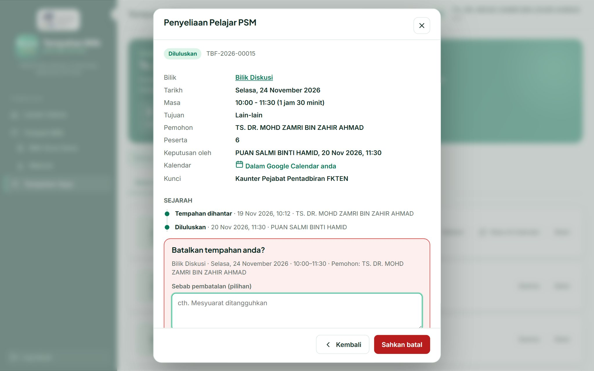
Klik untuk besarkanHalaman bilik
- Galeri gambar (klik untuk besarkan), keterangan, lokasi, kapasiti dan tempat ambil kunci.
- Kekosongan 7 hari, waktu operasi dan kemudahan.
- PIC dengan butang telefon dan WhatsApp.
- Tempah bilik ini terus ke jadual bilik tersebut.
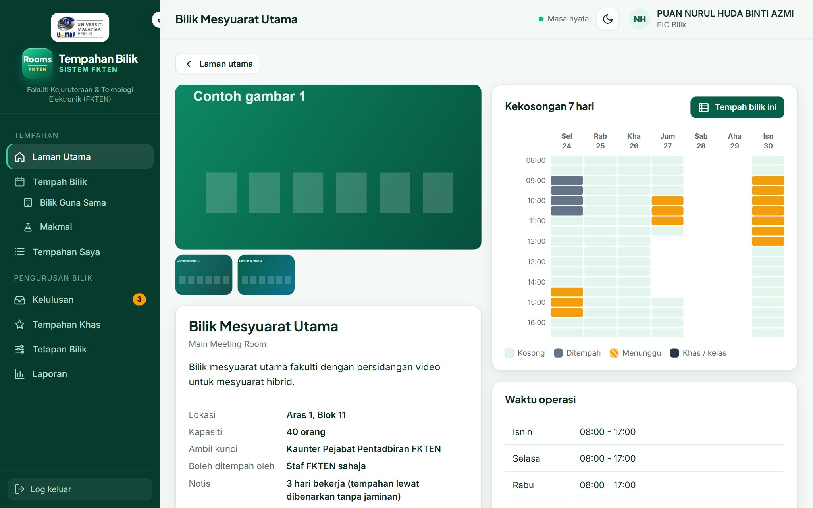
Klik untuk besarkanPIC bilik & makmal
Meluluskan tempahan, menyekat slot untuk kelas, memindahkan tempahan sedia ada dan menjaga maklumat bilik.
Senarai kelulusan
- Emel dihantar kepada PIC bagi setiap tempahan baharu; nombor merah pada menu Kelulusan.
- Tab: Menunggu kelulusan, Hari ini, Sejarah. Tapis ikut kategori atau bilik.
- Setiap tempahan menunjukkan pemohon (dan tag FKC jika berkenaan), masa dan tanda Segera.
- Ringkasan harian dihantar setiap pagi hari bekerja jam 7:30.
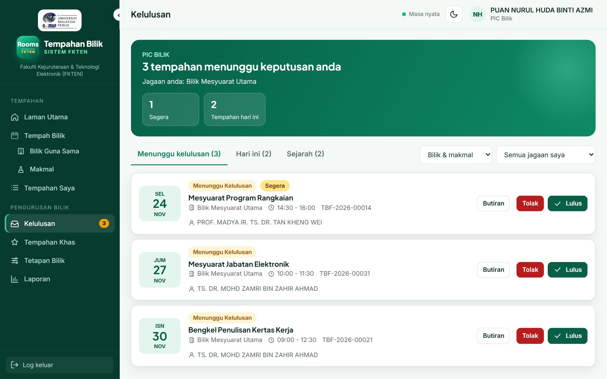
Klik untuk besarkanLuluskan (2 langkah)
- Klik Lulus: panel pengesahan dengan butiran tempahan dipaparkan. Belum ada yang dihantar.
- Tambah catatan kepada pemohon jika perlu (pilihan), cth. masa ambil kunci.
- Klik Sahkan lulus.
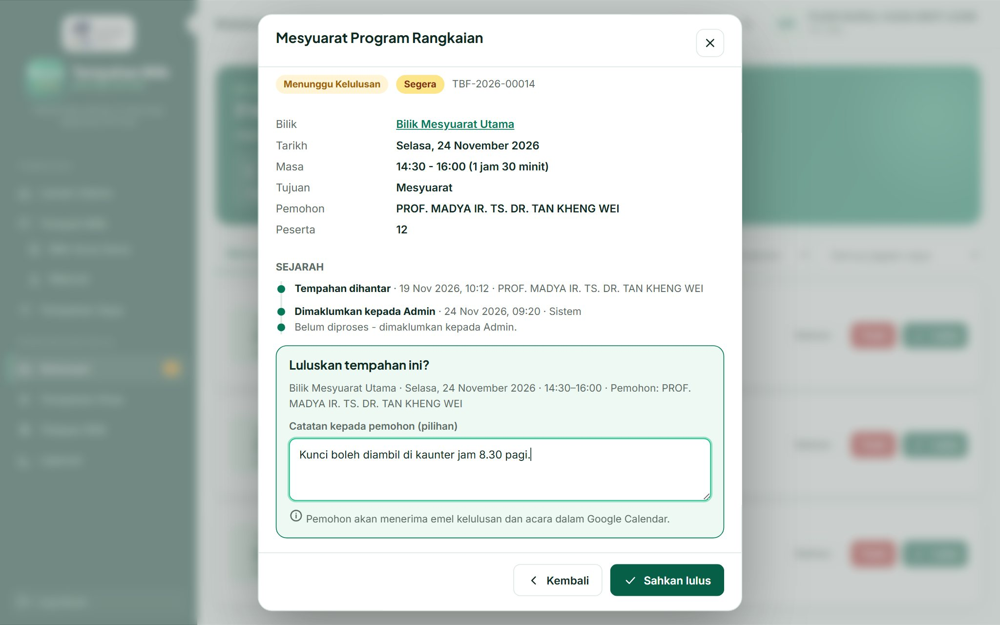
Klik untuk besarkanTolak & batal oleh PIC
- Klik Tolak dan nyatakan sebab (wajib).
- Klik Sahkan tolak; sebab dihantar melalui emel kepada pemohon.
- Batal oleh PIC (tempahan yang telah diluluskan, cth. penggunaan segera fakulti): sebab wajib, pemohon diemel dan acara kalendar dipadam.
- Tanda tidak hadir: selepas tempahan tamat, sehingga 7 hari.
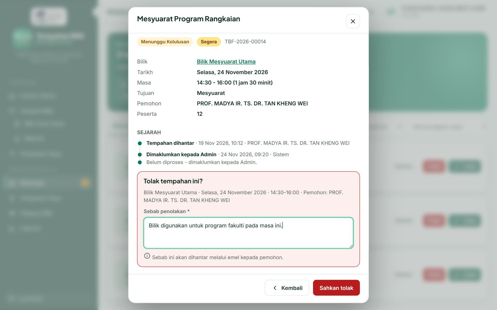
Klik untuk besarkanTempahan Khas (jadual kelas)
- Sekat slot terus tanpa kelulusan: kelas mengikut jadual akademik, penyelenggaraan, program fakulti.
- Sekali atau berulang setiap minggu (pilih hari dan tempoh semester); boleh melangkau hari cuti.
- Semak tarikh & pertindihan sebelum simpan.
- Jika bertindih: Langkau tarikh tersebut (disyorkan) atau Gantikan tempahan sedia ada dengan sebab (pemohon diemel).
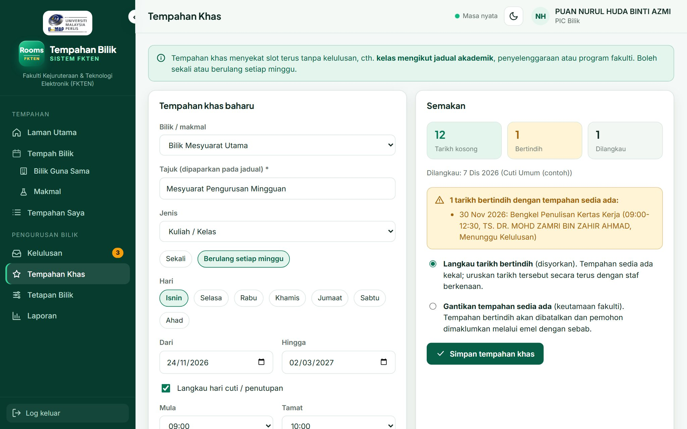
Klik untuk besarkanTempah bagi pihak & pindahan
- Pilih masa seperti biasa, kemudian tandakan Tempah bagi pihak staf lain.
- Masukkan emel staf UniMAP. Jika tiada dalam Senarai Induk, isi maklumat beliau seperti UniSIS.
- Untuk tempahan daripada kaedah lama, tandakan Pindahan.
- Klik Simpan & luluskan.
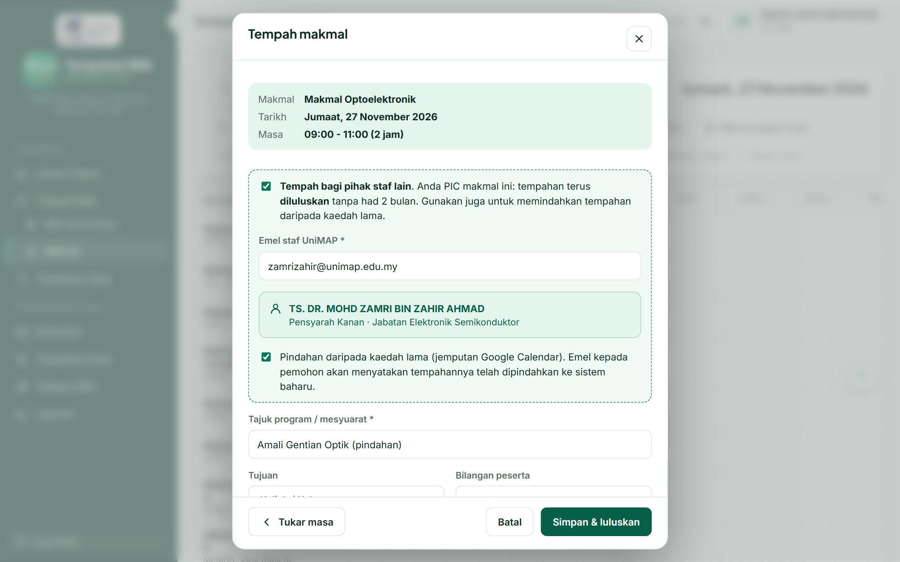
Klik untuk besarkanTetapan Bilik: maklumat
- Nama, blok, aras, kapasiti, tempat ambil kunci, panduan lokasi.
- Keterangan dan peraturan khusus bilik (dipaparkan kepada pemohon).
- Tempoh notis dan had tempahan awal khusus bilik (kosong = tetapan lalai).
- Boleh ditempah: nyahtanda untuk menutup sementara (cth. renovasi).
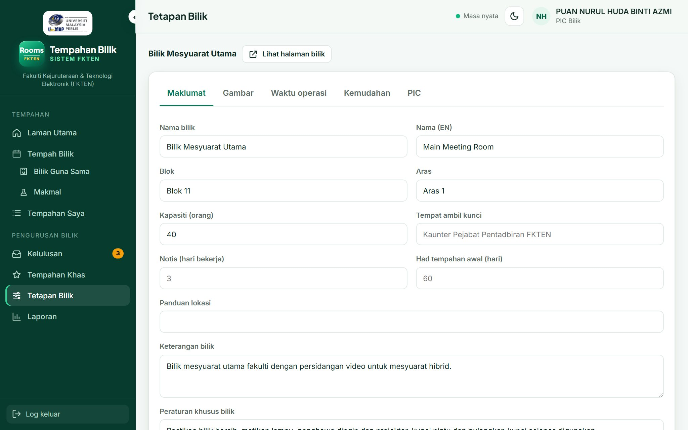
Klik untuk besarkanWaktu operasi
- Tandakan Buka bagi setiap hari; hari ditutup dikelabukan.
- Tetapkan waktu buka dan tutup (slot 30 minit).
- Rehat: cth. Jumaat 12:15–14:45 menyekat slot 12:00–15:00. Pilih Tiada jika tiada rehat.
- Jika ada tempahan terjejas, sistem bertanya: kekalkan atau batalkan (dengan sebab).
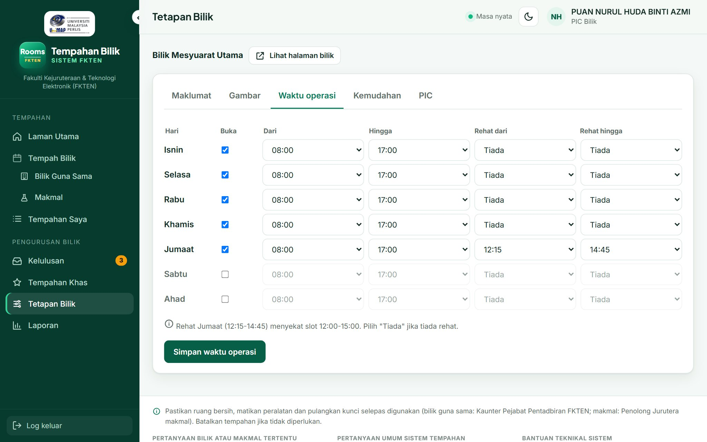
Klik untuk besarkanGambar bilik
- Tab Gambar › Muat naik gambar (boleh pilih beberapa sekali gus, sehingga 8).
- Gambar dikecilkan secara automatik sebelum dimuat naik.
- ★ jadikan gambar utama (kad bilik & atas halaman bilik); ◀ ▶ susun; 🗑 padam.
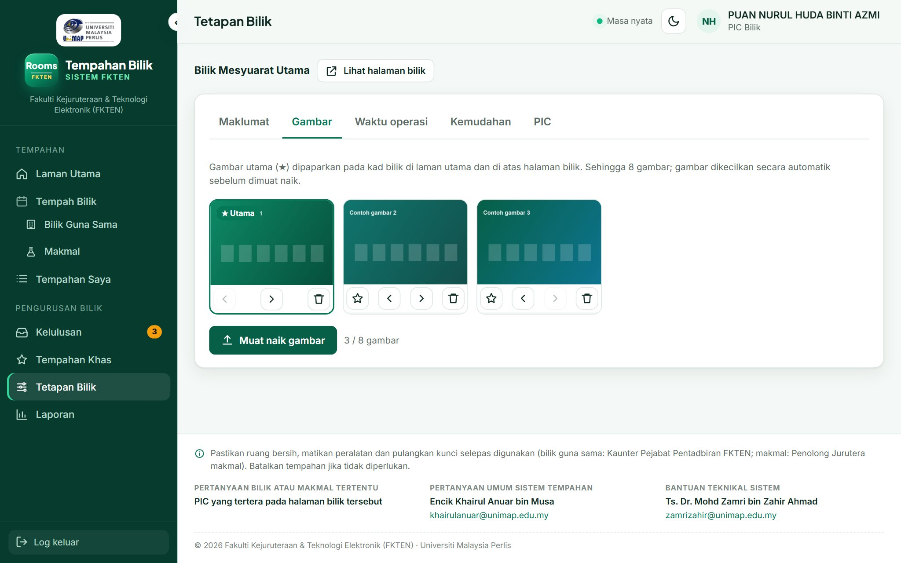
Klik untuk besarkanLaporan penggunaan
- Bagi setiap bulan: tempahan staf, jam digunakan, jam tempahan khas dan kadar penggunaan.
- Bilangan batal, ditolak, luput dan tidak hadir.
- Tapis Bilik Guna Sama / Makmal; PIC melihat bilik jagaan sendiri, Admin melihat semua.
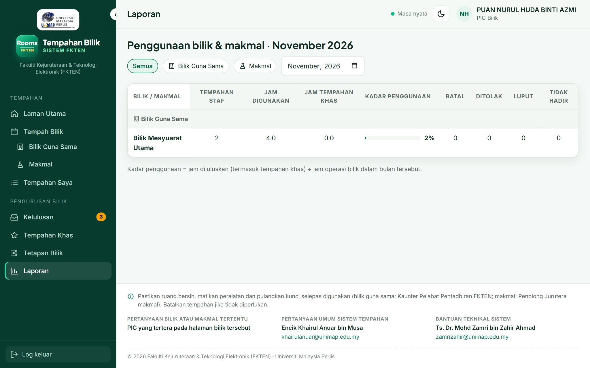
Klik untuk besarkanPentadbir
Penyelia tempahan dan pentadbir sistem: semua tindakan PIC bagi semua bilik, ditambah cuti, peranan, tetapan dan log emel.
Cuti & penutupan · Pengguna & peranan
Cuti & Penutupan: tutup semua ruang atau satu bilik; tempahan terjejas dikekalkan atau dibatalkan dengan sebab. Pengguna & Peranan: urus Admin, penerima semua emel dan status profil pengguna.
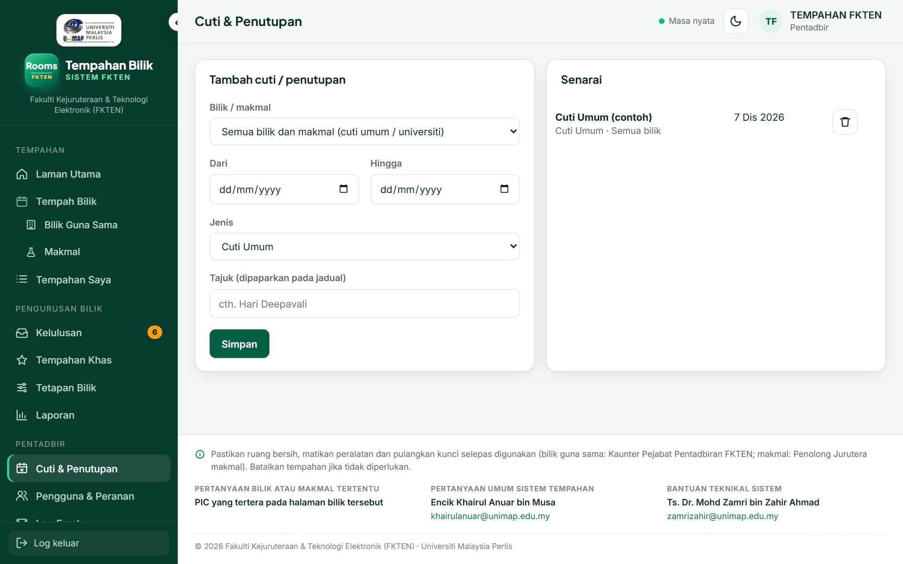
Klik untuk besarkan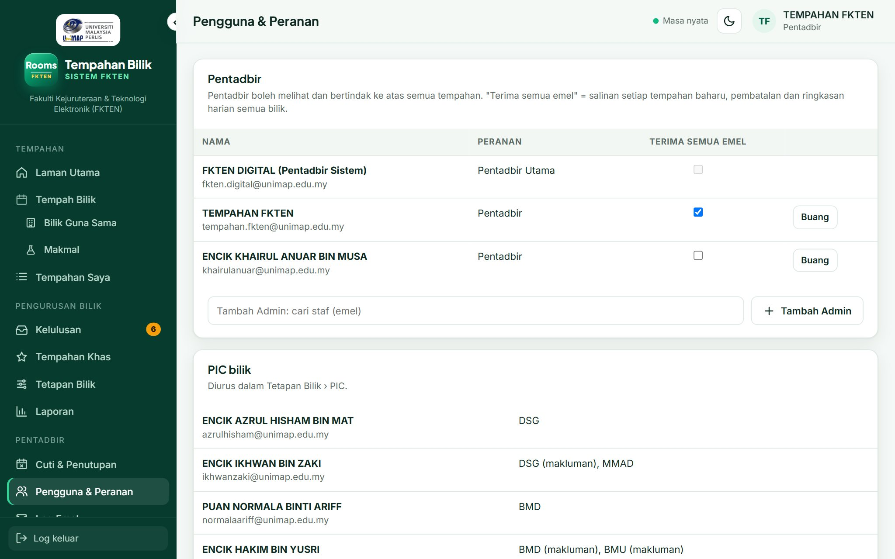
Klik untuk besarkanTetapan sistem
- Emel & kalendar: mod emel (OFF / TEST / LIVE), emel ujian, Reply-To, Google Calendar, emel pertanyaan.
- Peraturan tempahan: tempoh notis, had tempahan awal, peringatan, tanda tidak hadir, had gambar, tempat ambil kunci.
- Teks & paparan: teks akuan pemohon dan amaran tempahan segera.
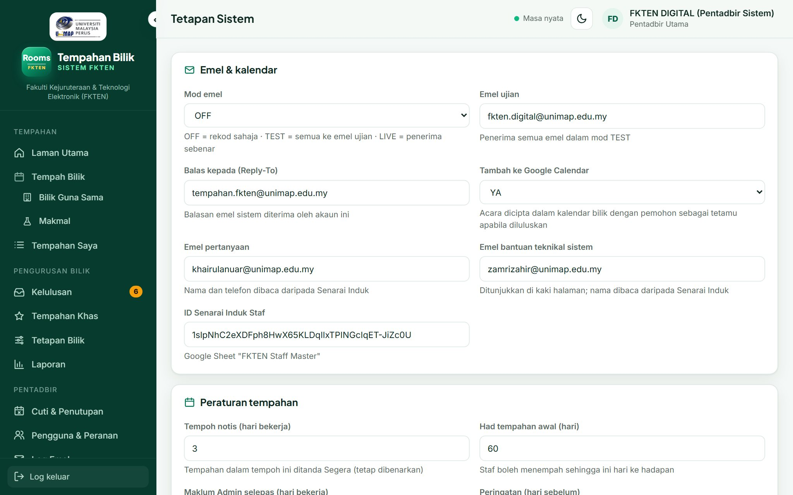
Klik untuk besarkanEmel automatik & Log Emel
| Bila | Kepada |
|---|---|
| Tempahan baharu / segera | PIC bilik (+ salinan Admin) |
| Tempahan diterima | Pemohon |
| Diluluskan / ditolak | Pemohon (+ PIC & Admin) |
| Dibatalkan oleh pemohon | PIC bilik |
| Dibatalkan oleh PIC / ganti khas | Pemohon, dengan sebab |
| Ditempah bagi pihak / pindahan | Staf berkenaan |
| Belum diproses > 2 hari bekerja | Admin |
| Peringatan sehari sebelum | Pemohon |
| Ringkasan harian 7:30 pagi | Setiap PIC |
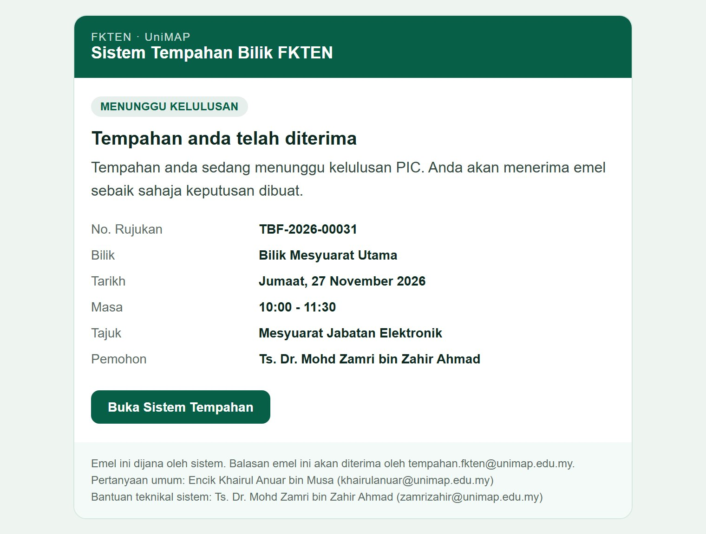
Klik untuk besarkanPeraturan utama tempahan
| Perkara | Peraturan |
|---|---|
| Slot | 30 minit; mula dan tamat pada slot. Tiada masa penimbal. |
| Pertindihan | Tidak dibenarkan. Tempahan menunggu dan diluluskan sama-sama mengunci slot. Bersebelahan dibenarkan (cth. 10:00–11:00 dan 11:00–12:00). |
| Waktu | Dalam waktu operasi bilik, di luar waktu rehat dan hari cuti / penutupan. |
| Tempoh notis | 3 hari bekerja. Kurang daripada itu masih dibenarkan sebagai Segera (tiada jaminan). |
| Had tempahan awal | Sehingga 60 hari ke hadapan (tempahan khas dan tempahan bagi pihak tidak terikat). |
| Kelulusan | Semua tempahan staf perlu kelulusan PIC. Tiada keputusan sebelum masa tamat = Luput. |
| Pembatalan | Pemohon boleh batal sebelum masa mula. PIC / Admin perlu nyatakan sebab. |
| No. telefon | Wajib bagi setiap tempahan staf. |
Siapa boleh menempah apa
| Pengguna | Bilik Guna Sama | Makmal | Profil |
|---|---|---|---|
| Staf FKTEN (Senarai Induk) | ✓ Tempah | ✓ Tempah | Automatik |
| Staf FKTEN baharu | ✓ Tempah | ✓ Tempah | Isi sekali (seperti UniSIS) |
| Staf FKC | Lihat sahaja | ✓ Tempah | Isi sekali (seperti UniSIS) |
| Staf fakulti / jabatan lain | Lihat sahaja | Lihat sahaja | Isi sekali; PIC boleh tempah bagi pihak |
| Pelajar (@studentmail) | Tidak dibenarkan log masuk | ||
Guna di telefon
- Semua halaman menyesuaikan saiz skrin telefon; menu kiri dibuka dengan butang ☰.
- Jadual: leret atau guna butang ◀ ▶; kad masa memudahkan pilihan masa tamat tanpa perlu menyeret.
- Banner "Tiada sambungan internet" muncul jika talian terputus; tiada tempahan dihantar sehingga sambungan pulih.
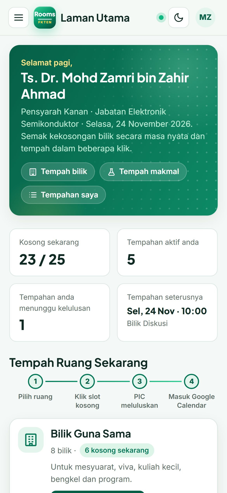
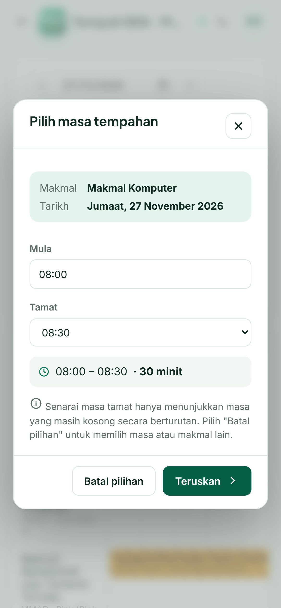
Soalan lazim
Bolehkah dua orang menempah slot yang sama?
Tidak. Slot dikunci sebaik tempahan dihantar (menunggu atau diluluskan). Siapa dahulu, dia dapat.
Saya tersilap klik Lulus. Apa berlaku?
Tiada apa-apa dihantar sehingga anda klik "Sahkan lulus". Klik "Kembali" untuk batal.
Fakulti perlukan bilik yang telah ditempah staf?
PIC / Admin boleh batalkan tempahan tersebut dengan sebab, atau guna Tempahan Khas pilihan "Gantikan". Pemohon diemel secara automatik.
Bagaimana dengan tempahan dibuat cara lama?
PIC memasukkannya melalui "Tempah bagi pihak" dan menanda "Pindahan". Pemohon diemel bahawa tempahan telah dipindahkan.
Kenapa saya tidak boleh menempah bilik guna sama?
Bilik guna sama untuk staf FKTEN sahaja. Staf FKC boleh menempah makmal; staf lain boleh menghubungi PIC.
Acara tidak muncul dalam Google Calendar saya?
Acara ditambah selepas tempahan diluluskan. Semak tempahan dalam Tempahan Saya dan pastikan statusnya Diluluskan.
Tempahan saya "Luput"?
PIC tidak sempat membuat keputusan sebelum masa tamat. Tempahan segera disarankan menghubungi PIC terus.
Siapa dihubungi untuk pertanyaan?
Hal bilik / makmal tertentu: PIC pada halaman bilik. Pertanyaan umum sistem: penyelia tempahan fakulti (emel di bahagian bawah laman utama sistem).
Cuba sistem sebenar
Mohon setiap PIC mencuba sistem dengan akaun UniMAP masing-masing dan melengkapkan maklumat bilik jagaan.
- Buka sistem dan log masuk dengan akaun UniMAP anda.
- Tetapan Bilik: semak maklumat, kapasiti, waktu operasi dan kemudahan; muat naik 2–3 gambar bilik.
- Buat satu tempahan ujian pada minggu hadapan, tajuk bermula "UJIAN".
- Di Kelulusan: cuba lulus atau tolak tempahan ujian tersebut.
- Batalkan tempahan ujian selepas selesai.
Pelaksanaan & maklum balas
Percubaan
PIC menguji sistem dan melengkapkan maklumat, waktu operasi dan gambar bilik.
Pindahan
PIC memasukkan tempahan sedia ada (kaedah lama) dan jadual kelas makmal sebagai Tempahan Khas.
Pelancaran
Mod emel LIVE dan hebahan kepada semua staf FKTEN (dan FKC bagi makmal).
Maklum balas yang diharapkan
- Adakah maklumat, kapasiti dan waktu operasi bilik / makmal anda betul?
- Adakah tempoh notis 3 hari bekerja dan had 2 bulan sesuai?
- Pelulus bagi setiap bilik: adakah perlu ditambah atau ditukar?
- Apa yang kurang atau mengelirukan semasa mencuba?
Terima kasih
Hal bilik & makmal
PIC yang tertera pada halaman setiap bilik / makmal dalam sistem.
Bantuan sistem
Ts. Dr. Mohd Zamri bin Zahir Ahmad
Pensyarah Kanan, FKTEN
zamrizahir@unimap.edu.my